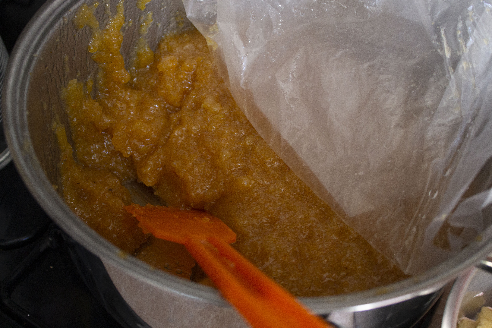
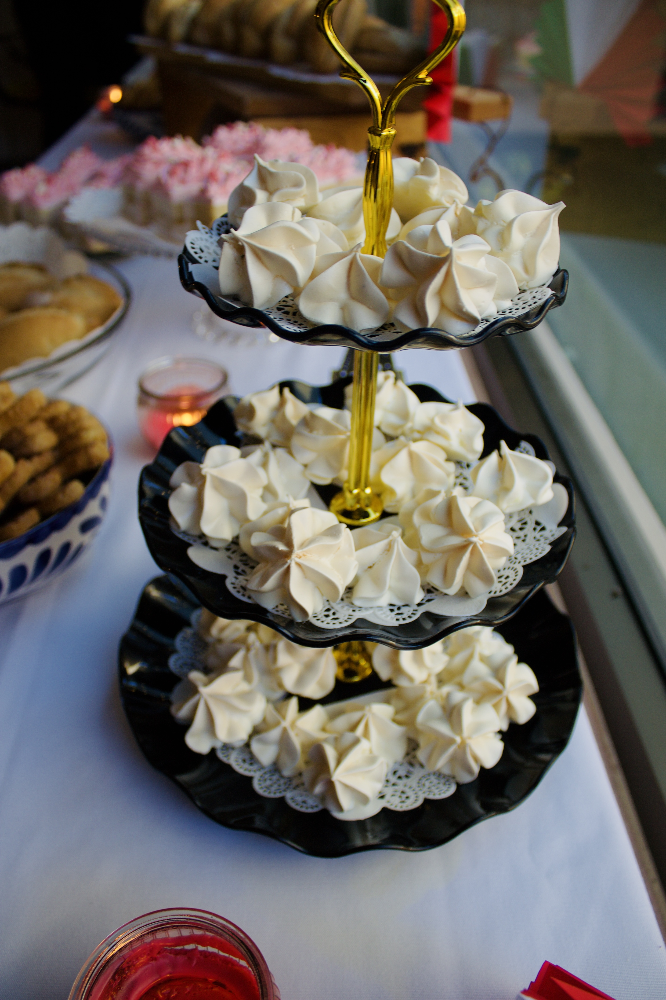
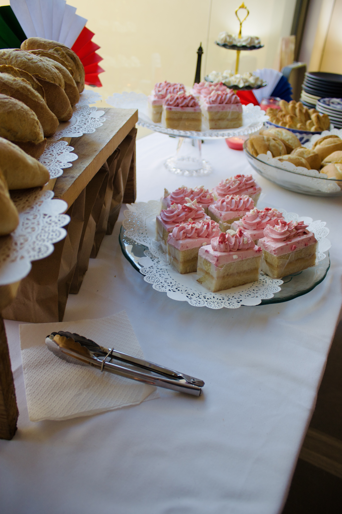

Postres
- Bolillo con jalea de tejocote 
- Merengues 
- Orejas
- Biscocho con chantilly de frambuesa 
Esta investigación es relevante porque profundiza en cómo la cultura francesa influyo en la gastronomía mexicana durante el Porfiriato, y como estos cambios en la cultura alimentaria, la repostería y la panadería han llegado a formar parte del patrimonio cultural y gastronómico de México. Comprender este proceso ayuda a apreciar mejor la riqueza culinaria actual, valorar los productos y técnicas que surgieron de este mestizaje cultural. Es importante destacar que el patrimonio cultural y gastronómico de un país es una fuente de identidad y pertenencia para su pueblo, la importancia de preservar este legado radica en que la gastronomía, como cualquier manifestación cultural, es susceptible a perdida si no se documenta y se difunde. La investigación no solo busca analizar la influencia francesa en el contexto histórico, contribuir a la difusión y valoración de productos en específico derivado de la revisión de textos del siglo XIX.
La cocina mexicana fue declarada como Patrimonio Cultural de la Humanidad por parte de la Organización de las Naciones Unidas para la Educación la Ciencia y la Cultura (UNESCO), durante la quinta reunión del Comité Intergubernamental para la Salvaguardia del Patrimonio Inmaterial de la Humanidad, realizada en Nairobi, Kenia el 16 de noviembre de 2010, quedando inscrita bajo el título “La cocina tradicional mexicana, cultura comunitaria, ancestral y vida. El paradigma de Michoacán.(García Bustos, 2012)
La cocina tradicional mexicana fue declarada por su originalidad, historia, continuidad, autenticidad, diversidad, identidad, riesgos y proyección, quedando incluida de manera oficial en la lista de Patrimonio Cultural Inmaterial de la Humanidad de la UNESCO. Bajo el titulo antes mencionado. Esta designación básicamente consiste en
La importancia del patrimonio cultural inmaterial no estriba en la manifestación cultural en sí, si no en el acervo de conocimientos y técnicas que se transmiten de generación en generación.
Es fundamental tomar y clarificar que abarca este reconocimiento patrimonial, aclaración que realiza el director general del Instituto Nacional de Antropología de Historia (INAH), Alfonso de María y Campos, al diario la Jornada.
Es muy importante dejar en claro que la declaratoria abarcar a la comida tradicional de todo México. No debe confundirse con el ejemplo que se puso como paradigma, que es la comida de Michoacán…(Vargas & Montaño, 2010) En este caso lo que se premia es la autenticidad de la cocina y la capacidad que tiene de evolucionar, de cambiar, con una base propia.
La cocina en Francia tiene sus orígenes desde el siglo XVI la clase nobiliaria estaba pasando por una transformación que daría pie a la cultura cortesana moderna. Fue un elemento escrito que contribuyo potencialmente al enaltecimiento de las prácticas culinarias de la nobleza europea y la burguesía en ascenso, no solo en Francia, sino en toda Europa. En el siglo XVII Francia contribuyo a uno de los mayores cambios de la época, el auge de los alimentos muy calientes o muy fríos. Aparecen las salsas, sorbetes y helados.
La utilización masiva del azúcar, sofistica la repostería. (Sánchez & Mújica, 2006). Lo que marca un antecedente valioso, ya que en el siglo XVIII ya con la estabilidad del consumo y producción de postres, sorbetes y helados, el auge del chocolate, café, té, genero un furor entre las clases altas, un siglo después el chocolate era símbolo de refinamiento y alta exclusividad. Con el tiempo en el siglo XIX para muchos es el inicio de una nueva era gastronómica, es el 1800, degustar para sentir el placer, los gourmands toman terreno. Cambian por completo las formas de cocinar y el comer.